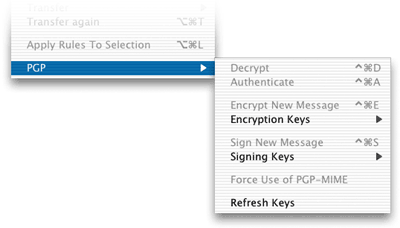
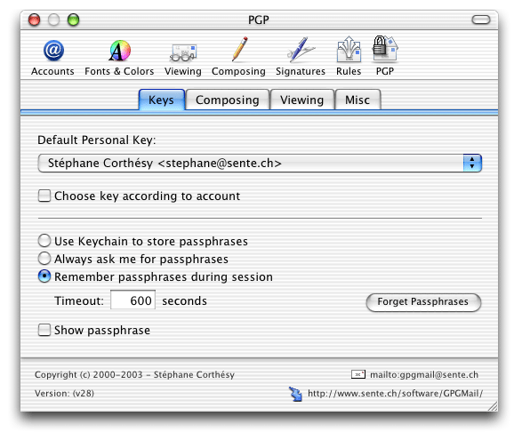
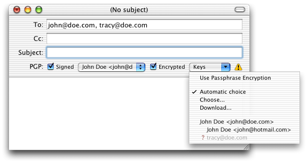
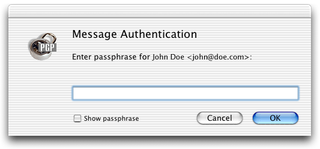
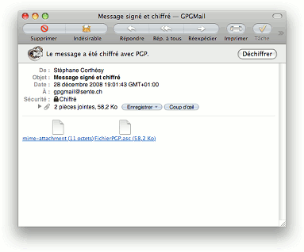

English | Français
PGP pour Mail
GPGMail est une extension à l'application de courriel Mail d'Apple, fournissant une interface graphique à gpg pour les opérations courantes. Il vous permet de lire/écrire des messages chiffrés, ainsi que d'utiliser des signatures électroniques sur vos messages.
GPGMail étend l'application Mail d'Apple et vous permet de lire/écrire des courriels avec signature électronique et/ou chiffrage PGP. Vous pouvez utiliser GPGMail pour des messages en texte pur ou au format MIME, conformément au document RFC 3156.
GPGMail ne contient pas de code de chiffrage: c'est un client de l'exécutable gpg.
GPGMail est un bidouillage informatique (ou hack), utilisant des fonctionalités internes privées de Mail. Utilisez-le à vos risques (mais sans périls ;-)!
          
GPGMail a été traduit en 11 langues, grâce à ses utilisateurs: il est distribué en anglais, espagnol, japonais, français, allemand, coréen, italien, finlandais, danois, hollandais et suédois.
 (?? ??? 2008) La version 1.2.0 (v??) de GPGMail est maintenant disponible. (?? ??? 2008) La version 1.2.0 (v??) de GPGMail est maintenant disponible.
Cette page contient les informations suivantes:
Une fois démarré, Mail a un sous-menu, PGP, dans son menu
Message, avec les choix suivants:

- Déchiffrer
- Authentifier
- Chiffrer le message
- Clefs de chiffrement
- Chiffrement par mot de passe
- Choix automatique
- Sélectionner...
- (liste de clefs publiques)
- Signer le message
- Clefs de signature
- Utiliser PGP-MIME
- Rafraîchir les clefs
| 
|
Il y a aussi un nouveau sous-menu, Clefs PGP, dans le menu Affichage, qui vous permet de choisir quelles caractéristiques des clefs afficher.
Enfin, dans le menu Fenêtres, un nouvel élément Recherche de clefs PGP vous permet de rechercher des clefs PGP sur des serveurs de clefs.
Mail a aussi une nouvelle section dans ses préférences, section dans laquelle vous pouvez:
- définir votre identité PGP (c'est-à-dire l'adresse courriel de votre clé PGP)
- choisir des options comme le déchiffrage ou l'authentification automatiques, la mémorisation du mot de passe, etc.

Quand vous composez un nouveau message, de nouveaux boutons apparaissent dans la fenêtre de composition:

Ils vous permettent de choisir quelle clef privée utiliser pour signer, et quelles clefs publiques utiliser pour chiffrer. Par défaut, GPGMail essaiera de trouver les clefs automatiquement d'après les adresses électroniques des destinataires; les clefs sont listées dans le menu déroulant Clefs. Au cas où il manque des clefs, un icône d'alerte est placé à côté du menu déroulant. GPGMail vous propose, lors de l'envoi, de rechercher les clefs manquantes sur un serveur de clefs (si gpg a été configuré correctement, par exemple en utilisant GPGPreferences); vous pouvez faire la recherche vous-même depuis le menu Télécharger....

Dans la fenêtre de composition, vous pouvez aussi ajouter deux éléments sur la barre d'outils (en la personnalisant) pour (dés)activer le chiffrage et/ou la signature électronique; vous pouvez aussi passer par les menus
PGP/Chiffrer le message et PGP/Signer le message. Lorsque vous rédigez un nouveau message, vous pouvez lui ajouter une signature électronique (le mot de passe de votre clé PGP vous sera alors demandé), et/ou chiffrer le message. Notez que la signature et le chiffrage sont appliqués sur l'entier du message.

GPGMail peut utiliser deux formats différents pour le chiffrage/la signature électronique: si votre message consiste en du texte pur (pas de pièce jointe, de texte formaté avec du gras, de l'italique, etc.), GPGMail utilise l'ancien format PGP, en texte pur, avec l'armure ASCII -----PGP-----. Sinon, il utilise le nouveau format OpenPGP/MIME, avec des pièces jointes, qui n'est pas encore reconnu par certaines applications de courriel comme Outlook/Entourage/Eudora, mais qui est par contre bien accepté par Sylpheed, Mulberry, Ximian et d'autres. Si vous préférez que GPGMail utilise toujours le nouveau format OpenPGP/MIME, alors changez-le dans les préférences ou le menu Message/PGP/Utiliser PGP-MIME.
Lorsque vous feuilletez vos messages, GPGMail peut intervenir automatiquement, ou à la demande. En mode automatique, il essaie d'authentifier ou de déchiffrer le message affiché, si celui-ci est nouveau; en mode manuel, vous cliquez sur le menu/bouton pour déchiffrer ou authentifier le message affiché; vous pouvez aussi utiliser le menu contextuel.
Après authentification du messagem les informations sur la signature sont affichées, en forme courte ou longue.

Le chiffrage/déchiffrage des messages au format MIME fonctionne.
Le déchiffrage des message HTML fonctionne aussi, pour autant qu'il y ait une alternative MIME en texte pur, mais dans ce cas vous devez indiquer à Mail d'afficher l'alternative après le déchiffrage du message (menu Message/Présentation/Alternative au format Texte). N'espérez pas de meilleur support pour le HTML dans les versions suivantes de GPGMail!
Si vous permettez la mémorisation du mot de passe, celui-ci est gardé en mémoire pendant un certain temps (par défaut, 60 secondes): s'il n'a pas été utilisé durant ce laps de temps, le mot de passe est vidé de la mémoire. Vous pouvez aussi stocker votre mot de passe dans votre trousseau de clefs système.
Limites actuelles
- GPGMail ne supporte pas la distribution/réception des clés PGP (selon RFC 3156).
- GPGMail chiffre/signe le message complet, et ne peut déchiffrer/authentifier que le message complet. Vous ne pouvez pas choisir seulement une partie du message à chiffrer/signer.
- L'opération de chiffrage ne peut pas être interrompue.
- Vous ne pouvez pas rediriger un message PGP-MIME sans rendre celui-ci invalide.
- L'utilisateur n'est pas informé si seulement une partie d'un message reçu a été signé (c'est-à-dire pas l'entier du message).
- Les messages chiffrés sont stockés sous forme chiffrée et ne sont pas indexés par Mail/Spotlight.
- GPGMail ne sait pas vérifier/déchiffrer un message composés de plusieurs parties, si le message n'est pas au format OpenPGP-MIME (comme ceux créés avec les versions PGP 7 et précédentes, Outlook, Entourage).
Vous avez besoin de MacOS X 10.4.x ou 10.5.x; GPGMail ne fonctionnera pas sur d'autres versions du système, car l'application Mail change d'une révision à l'autre...
Vous avez besoin de gpg, version >= 1.4.0, généralement installé dans /usr/local/bin/, mais vous pouvez changer le paramètre utilisateur (user default) GPGOpenPGPExecutablePath et mettre un chemin différent.
Vous pouvez utiliser la distribution faite par MacGPG, disponible sur le site web de MacGPG.
Copyright (c) 2000-2008, Stéphane Corthésy
All rights reserved.
Redistribution and use in source and binary forms, with or without
modification, are permitted provided that the following conditions are met:
* Redistributions of source code must retain the above copyright
notice, this list of conditions and the following disclaimer.
* Redistributions in binary form must reproduce the above copyright
notice, this list of conditions and the following disclaimer in the
documentation and/or other materials provided with the distribution.
* Neither the name of Stéphane Corthésy nor the names of GPGMail
contributors may be used to endorse or promote products
derived from this software without specific prior written permission.
THIS SOFTWARE IS PROVIDED BY STÉPHANE CORTHÉSY AND CONTRIBUTORS ``AS IS'' AND ANY
EXPRESS OR IMPLIED WARRANTIES, INCLUDING, BUT NOT LIMITED TO, THE IMPLIED
WARRANTIES OF MERCHANTABILITY AND FITNESS FOR A PARTICULAR PURPOSE ARE
DISCLAIMED. IN NO EVENT SHALL STÉPHANE CORTHÉSY AND CONTRIBUTORS BE LIABLE FOR ANY
DIRECT, INDIRECT, INCIDENTAL, SPECIAL, EXEMPLARY, OR CONSEQUENTIAL DAMAGES
(INCLUDING, BUT NOT LIMITED TO, PROCUREMENT OF SUBSTITUTE GOODS OR SERVICES;
LOSS OF USE, DATA, OR PROFITS; OR BUSINESS INTERRUPTION) HOWEVER CAUSED AND
ON ANY THEORY OF LIABILITY, WHETHER IN CONTRACT, STRICT LIABILITY, OR TORT
(INCLUDING NEGLIGENCE OR OTHERWISE) ARISING IN ANY WAY OUT OF THE USE OF THIS
SOFTWARE, EVEN IF ADVISED OF THE POSSIBILITY OF SUCH DAMAGE.
Notez que certaines parties de la distribution GPGMail sont sous licence LGPL: le framework MacGPGME, les librairies gpg-error and gpgme. La licence de GPGMail ne s'applique pas à ces parties.
- MacGPGME, copyright 2001-2008 MacGPG Project
- gpg-error, copyright 2005-2008 g10 Code GmbH
- gpgme, copyright 2001-2008 g10 Code GmbH
J'accueille avec plaisir vos commentaires sur ce logiciel.
Si vous rencontrez des problèmes, si vous avez des suggestions, ou, encore mieux, des corrections pour
GPGMail, envoyez SVP un courriel à gpgmail@sente.ch
Ma clé PGP est disponible (au moins) sur le serveur de clés suivant (utilisez l'option --keyserver de gpg, ou, encore mieux, installez GPGPreferences): wwwkeys.us.pgp.net.
Mon identifiant de clé: 0x992020D4. L'empreinte de ma clé: A5BA B3D8 4F6C AE03 8B22 76F2 5467 B616 9920 20D4
Si vous appréciez GPGMail, dites-le moi, ainsi qu'à Apple, et peut-être qu'ils m'aideront à porter GPGMail sur les futures versions de MacOS X (on peut toujours rêver!).
GPGMail est gratuit, mais si vous voulez donnez quelque chose... Envoyez-moi une carte postale d'où vous habitez.
Sen:te, Petit-Chêne 18ter, 1003 Lausanne, Suisse
Jusqu'à présent, j'ai reçu des cartes de Vienne (A), Utrecht (NL), Nuremberg (D), Berlin (D), Munich (D), Diemen (NL), Genève/CERN (CH), Manchester (USA/NH), Hakalau (USA/HI), Columbia University (USA/NY), Emmendingen (D), Naantali (FI), Newport Beach (USE/CA), Ellensburg (USA/WA), Hsinshu (TW), Ulm an der Donau (D), Lafayette (USA/IN), Chicago (USA/IL), Tallahassee (USA/FL), Key West (USA/FL), Djakarta (Indonésie), Battery Point (Tasmanie), Saragosse (E). Merci à tous!
Suivant les suggestions des utilisateurs de GPGMail, j'ai créé une liste de diffusion, gpgmail-users@sente.ch (en anglais; une version française verra peut-être le jour plus tard). C'est une liste à très faible trafic, utilisée principalement pour annoncer des nouvelles sur le développement de GPGMail (versions de test, nouvelles versions, etc.). Tout le monde peut s'inscrire en envoyant un message à gpgmail-users-on@sente.ch. Les archives peuvent être consultées en ligne à l'adresse http://www.sente.ch/Lists/gpgmail-users/List.html (login: sente, mot de passe: sente). Notez que vous pouvez poster vous aussi des messages, si vous voulez échanger des idées/opinions sur GPGMail avec d'autres utilisateurs.
(?? ??? 2008) GPGMail 1.2.0 (v??) est actuellement disponible:
- Disponible uniquement pour Leopard/10.5 (une dernière version pour Tiger/10.4 suivra sous peu, numérotée 1.1.3)
- Correction d'un problème rendant
GPGOpenPGPExecutablePath inutilisable
- Correction d'un problème lors de l'envoi de message signé+chiffré (ASCII) avec une clef sans niveau de confiance, et GPGMail configuré pour n'accepter que les clefs avec niveau de confiance: une erreur n'était pas affichée à l'utilisateur.
- Correction: signait, lors de la signature automatique, alors qu'il n'y avait pas de compte correspondant
- Correction d'un problème avec le choix manuel des clefs de chiffrage: le message pouvait être envoyé dans chiffrage ni signature
- Traduction en suédois par Erik Hedlund
- Correction: certains en-têtes ajoutés dans les brouillons n'étaient pas enlevés avant l'envoi
- Correction d'un problème avec le choix manuel des clefs: le choix était perdu lors du réaffichage des clefs
- Correction d'un problème avec les messages créés via AppleScript et l'affichage des boutons PGP
- Correction de la dépendance avec
/usr/local/bin/gpg
- Correction de la position de certains éléments graphiques dans la fenêtre de composition
- Correction d'un problème avec l'option 'verbose' dans le fichier gpg.conf
- Ajout d'un nouveau serveur de clefs (SKS) dans la liste
- Correction de l'état du triangle permettant de montrer/masquer les informations étendues sur la signature
- Correction du choix automatique des clefs, alors que l'utilisateur avait demandé un choix manuel
- Correction du choix initial automatique des clefs
- Correction du choix automatique initial du chiffrage/de la signature
- Correction d'un bogue avec des éléments de la barre d'outils des fenêtres de messages
- Correction d'un problème de compatibilité (positionnement) avec MailTags
- Correction d'un bogue bloquant dans le panneau de recherche de clefs (dans la version beta)
- Correction d'un problème avec des systèmes non anglais
- Abandon du support de Panther (10.3)
- Nouvelle license BSD
- Hébergé sur SourceForge.net
(5 février 2006) GPGMail 1.1.2 (v46)
- Dernière version pour Panther/10.3
- Panther: correction des crashs
- Tiger: compilé aussi pour les Macs Intel (Universal Binary)
- Il faut désormais
gpg >= 1.4.x
- Tiger: désactivation temporaire de l'affichage des éléments graphiques PGP dans le fenêtre de composition des messages lorsque la fenêtre a été créée avec AppleScript, pour éviter un bug insolvable - vous pouvez quand même changer les paramètres PGP via le menu Message/PGP.
- Mail ne se bloque plus lorsque vous chiffrez des messages avec des clefs sans niveau de confiance suffisant
- Le champ de recherche des clefs PGP se remplit maintenant automatiquement sitôt qu'une opération échoue à cause d'une clef manquante
- Correction d'un problème avec le chiffrage par mot de passe et l'activation de la signature
- Correction d'un crash après une erreur lors de l'envoi
- Ajout de la traduction hollandaise par Marc-Siebren Kwadijk
- Ajout d'une option cachée,
GPGOpenPGPExecutablePath
- Correction d'un problème lorsque
gpg n'est pas configuré correctement
- Amélioration des messages d'erreurs liés à des clefs
- Amélioration des messages d'erreurs liés aux serveurs de clefs (pas encore en français)
- Accepte les algorithmes de hâchage SHA-256, SHA-384 et SHA-512
- Correction d'un problème de compatibilité avec MailTags
- Correction du tri des clefs dans le dialogue de choix des clefs
- Correction d'un problème avec les options "...seulement si le message n'est pas lu"
- Correction du problème où le chiffrage n'était parfois pas possible avant que la signature ne soit activée.
- N'essaie plus de déchiffrer les pièces-jointes de type text/plain
- Essaie de déchiffrer/authentifier les pièces-jointes de type application/octet-stream
- Correction des alignements des éléments PGP dans les fenêtres de composition
(17 juillet 2005) GPGMail 1.1.1 (v44):
- Changement des raccourcis clavier qui ne marchaient plus sous Tiger
- Tiger: correction d'un problème de compatibilité avec les messages chiffrés par Enigmail
- Tiger: ajout d'une ligne séparatrice dans la fenêtre de composition (merci à Felix Schaumburg)
- L'image d'alerte n'était plus affichée lorsqu'il manquait une clé
- Tiger: les icônes de la barre d'outils prennent moins de place
- Tiger: correction des boutons de la barre d'outils qui ne marchaient plus si les éléments PGP n'étaient pas affichés
- Tiger: le choix manuel des clefs est à nouveau possible
- Ajout de la traduction espagnole par Sergio Rodríguez Concha
- Correction de la traduction finlandaise par Seppo Laaksonen
- Ajout de la traduction japonaise par Tomio Arisaka
- Les informations PGP de l'expéditeur (signature/chiffrage/MIME) stockées dans la fiche du Carnet d'Adresse ne sont plus évaluées par les règles
- N'utilise plus les informations liées à S/MIME
- Correction de la traduction allemande
- Ajout d'une option cachée,
GPGAddCustomHeaders
- Tiger: correction de l'installation sous 10.4.1 et suivantes
- Correction d'alignements dans l'affichage
- Correction d'un problème de licence avec MacGPGME
- Correction d'un problème lié aux signatures usenet dans les messages ASCII
- Tiger: correction de la vérification/du déchiffrage automatiques des messages non lus
- Tiger: correction d'un problème d'affichage lorsque les champs d'adresse deviennent plus grands
- Tiger: correction d'un problème avec iPhoto
- Ajout de la traduction danoise par Sebastian Adorjàn Dyhr
- Correction d'un problème lors de la vérification de messages ASCII
- Correction d'un bug dans l'affichage, lors de l'utilisation d'AppleScript
- Tiger: correction d'une erreur intervenant lors de la vérification
- Tiger: certaines erreurs n'étaient pas reportées
(29 avril 2005) GPGMail version 1.1 (v42):
- Ajout du support de Tiger (10.4)
- Correction de l'affichage des clés révoquées/expirées/désactivées/invalides
- Correction d'un problème de compatibilité avec EudoraGPG sous Windows; merci à Georg Wedemeyer
- Correction de la traduction finlandaise (merci à Asko Kauppi)
- Ajout du support des groupes du Carnet d'Adresse
- Ajout de l'automatisation du choix des options PGP (chiffrage, signature) en fonction du contexte
- Ajout du support des options PGP définies dans le Carnet d'Adresse (grâce à l'extension ABKey de Robert Goldsmith)
- N'utilise plus de clés privées invalides
- N'utilise plus GPGMEProxyServer
- Les opérations PGP sont plus rapides, notamment la liste des clés
- Les brouillons ne perdent plus les attributs PGP
- Correction du problème des pièces jointes avec un nom de fichier contenant des accents.
- Correction de la perte de sélection de la clé privée
- Ajout de nouvelles options
- Ajout d'un contrôle de conflit des options PGP lors de l'envoi
- Correction de la reconnaissance des clés désactivées/expirées
- seules les traductions anglaise, française, finlandaise et allemande sont complètes
- Bien davantage encore, à documenter
(14 mai 2004) GPGMail version 1.0.2 (v37):
- Nouveaux icônes par Michel Poulain (merci aussi à Moritz Guth)
- Correction de la sélection de la clé privée
- Correction de la traduction espagnole
- Correction du défilement du titre dans la bannière de signature
- 10.2: Mail ne plante plus lorsqu'il essaie de charger GPGMail pour 10.3, mais affiche un message d'erreur à l'utilisateur
- Nouvelle option (cachée),
GPGRefreshesKeysOnVolumeMount, pour désactiver le rafraîchissement des clés quand un volume est (dé)monté; la valeur par défaut est YES.
- Nouvelle option (cachée),
GPGDisablesSMIME, pour désactiver totalement S/MIME. La valeur par défaut est NO.
- Ne considère plus les pièces jointes de type text/plain comme des fichiers PGP potentiels
- Correction d'une incompatibilité avec PGP7/Outlook: pour les messages chiffrés, utilise toujours
content-transfer-encoding: 7bit
- Quand le mot de passe venant du trousseau de clés était faux, le mot de passe dans le trousseau n'était pas détruit
- Correction de la reconnaissance des clés désactivées ou révoquées
- L'utilisateur pouvait sélectionner une clé privée révoquée ce qui donnait un message signé vide
- Nouvelle fonctionnalité: si l'utilisateur affiche toutes les clés (sans filtrage), alors la clé affiche aussi son statut révoquée/désactivée/expirée le cas échéant.
- Nouvelle fonctionnalité: la liste de serveur de clés est plus complète, comme dans GPGPreferences
- Nouvelle fonctionnalité: affiche une alerte quand la clé pour la signature est révoquée/désactivée/...
- Correction: si vous choisissez le chiffrage par mot de passe puis le désactiver, l'option de signature est restaurée correctement.
- Nouvelle fonctionnalité: after encryption failure due to missing keys, user can now select to send unencrypted
- Correction: 10.3: le menu déroulant des comptes était parfois grisé sans raison après qu'on avait changé de clé privée.
- 10.3: changement d'apparence du triangle dans la bannière de signature
- Fenêtre de composition: le triangle d'alerte est maintenant affiché dans le menu déroulant, le cas échéant
- Nouvelle option (cachée),
GPGUsesAlwaysCRLF, qui permet d'utiliser CRLF comme fin de ligne dans les messages chiffrés/signés (sauf MIME); la valeur par défaut est NO.
- Correction de l'activation/désactivation des menus et boutons lorsqu'il y a plusieurs fenêtres ouvertes
- Correction de la condition (rare) de blocage de Mail au démarrage
- Dernière version compatible avec 10.2
(17 novembre 2003) GPGMail version 1.0.1 (v33):
- Quand PGPmail est installé, vous n'êtes plus obligé de quitter, mais vous êtes averti qu'il y a des risques si vous continuez.
- Il n'y a plus de de programmes GPGMEProxyServer qui tournent encore après que Mail a quitté ou crashé.
- Quelques messages d'erreur ont été corrigé
- Les résultats de la recherche de clefs affichaient parfois des noms invalides (problème avec certains accents)
- La recherche de clefs affiche si les clés sont révoquées ou pas
- Les clés sont rafraîchies chaque fois qu'un volume est (dé)monté
- Ajout d'une traduction finlandaise par Seppo Laaksonen
- Ajout d'une traduction japonaise par Kory Talmage
- Emploi des règles typographiques dans la traduction française
- Correction de certains problèmes de positionnements
- Correction de l'installation avec FileVault
- Correction de l'installation dans
/Réseau/Utilisateurs/
- Correction du problème dû aux clefs utilisant l'encodage de chaîne ISOLatin1 pour leurs identifiants utilisateurs, lors du déchiffrage/de la vérification
- L'installeur vérifie maintenant la version du système
- Ne laisse plus traîner un message "Terminé." dans la partie statut.
- Ajout d'une traduction coréenne par Sangduk Park
- Correction du problème des lignes vides sur les autres logiciels de courriel
- Répondre/faire suivre/rediriger un message déchiffré fonctionne correctement: le message déchiffré est utilisé
(25 octobre 2003) GPGMail version 1.0 (v30):
- Révision complète du code; utilise maintenant GPGME (indirectement)
- Replacement de la plupart des boîtes de dialogue modales par des "bannières", à la Junk Mail
- Ajout du support pour la KeyChain, grâce à Annard Brouwer
- Ajout du support pour plusieurs clefs privées
- L'utilisateur peut maintenant choisir toutes les clefs (publiques/privées). Automatique ou manuel.
- Ajout du chiffrage symétrique (chiffrage sans clef, seulement avec échange de mot de passe)
- Les préférences ont été complètement revues
- Nouvelle option: activer/désactiver l'utilisation du réseau de confiance PGP
- Nouvelle option: choix du format OpenPGP-MIME format. Automatique ou manuel.
- Ajout du support pour les destinataires CCi
- De déchiffrage des messages chiffrés et signés fonctionne même si le message ne peut pas être vérifié (clef manquante, etc.)
- Correction d'une incompatibilité AppleScript
- Nouvelle option: signer quand on chiffre
- Nouvelle option: déchiffrer/vérifier automatiquement uniquement si le message était non-lu.
- Nouvelle option: possibilité de voir la phrase de passe quand vous la tapez
- Lors de l'envoi d'un message chiffré, s'il vous manque une clé, GPGMail essaie de la trouver par lui-même sur le serveur de clefs par défaut.
- Ajout de la recherche de clefs sur les serveurs de clefs.
- Nouvelle option: troncage des lignes (line wrapping)
- Nouvelle option: toujours chiffrer
- Le cache des phrases de passe est vidé quand l'ordinateur se met en veille
- Correction de l'installateur lorsque le chemin contient des alias/liens
- Correction du problème avec format=flowed
- Vérification de la présence de PGPmail
- L'algorithme de hash de gpg est maintenant utilisé
- Abandon du support pour MacOS X 10.1
- Ajout du support pour MacOS X 10.3
(10 septembre 2002) GPGMail version 0.5.4 (v22)
- Ajout d'une traduction suédoise par Daniel Aarno
- Ajout d'une traduction italienne par Filippo Stefanelli
- Correction de petits problèmes avec le dialogue du mot de passe
- Ne laisse plus traîner de fichiers dans
/tmp
- Automatisation de l'installation
- Traduction complète de la documentation en français
- La licence a été modifiée
- Corrections dans la traduction coréenne
- Ajout du support pour MacOS X 10.2.x
- Correction d'un problème de compatibilité entre le menu contextuel et les autres plug-ins pour Mail
(23 juin 2002) GPGMail version 0.5.3 (v20):
- Ajout d'une traduction espagnole par Sergio Rodríguez Concha
- Ajout d'une traduction française par Michel Poulain
- Ajout d'une traduction japonaise par Tomio Arisaka
- Ajout des superbes icônes de Michel Poulain
- Modification de l'icône "déchiffré", par Jamin Wilson
- Ajout de l'option
GPGOpenPGPStyleOnly (la valeur par défaut est NO), qui permet de forcer l'utilisation du format OpenPGP/MIME lors du chiffrage ou de la signature
- Correction des problèmes dus aux pièces jointes qui n'étaient pas chargées
- Correction du problème de la méthode Kotoeri
- Ajout d'une traduction allemande par Hauke Müller
- Ajout d'une traduction danoise par Thomas Dyhr
- Fin du support pour MacOS X Server (Rhapsody)
- Ajout d'une traduction coréenne par Sangduk Park
- Ajout du support pour les signatures encapsulées (RFC1847); c'est maintenant le format par défaut quand on utilise OpenPGP/MIME.
- L'état des boutons nouvellement ajoutés sur la barre d'outils est maintenant correct
- Corrections des problèmes avec les jeux de caractères (l'UTF8 n'est maintenant utilisé que si c'est strictement nécessaire)
- Ajout du menu contextuel pour le déchiffrage/l'authentification
- Correction du décodage des en-têtes
- Correction des signatures mal-formées
- Correction des problèmes de compatibilité avec Sylpheed, Evolution, Entourage, Outlook, Eudora, etc.
- Correction des problèmes de compatibilité avec MacOS X 10.1.5
- Ajout d'un support minimum pour les messages HTML signés et/ou chiffrés
- Correction des problèmes de compatibilité avec gpg 1.0.7: vous n'avez plus besoin de signer les clés avant de les utiliser pour le chiffrage. Avec gpg 1.0.6, vous devez le faire: si vous l'oubliez, le chiffrage est refusé.
- Correction des problèmes de compatibilité avec MailPriority >= 1.1
(22 novembre 2001) GPGMail version 0.5.2 (v13):
- Porté sur MacOS X 10.1.x
- Correction de problèmes avec les jeux de caractères
- Ajout de raccourcis clavier
- Il faut maintenant gpg >= 1.0.6
- Pas de version pour MacOS X Server 1.x
(8 septembre 2001) GPGMail version 0.5.1 (v8):
- Porté sur MacOS X 10.0.4
- Correction de problèmes dans l'application de RFC 3156
- Correction d'un tas d'autres erreurs
(7 février 2001) GPGMail version 0.5 (v4): version initiale, pour MacOS X Server 1.x et MacOS X Public Beta.
Problèmes connus
- Les boutons de la barre d'outils apparaissent parfois à double, quand vous utilisez plusieurs fenêtres.
- Les boutons de la barre d'outils sont parfois déplacés ou disparaissent.
- L'apparence des messages chiffrés change au cours du temps.
- Le commentaire de gpg est perdu lors de la création de messages signés
- Le message d'erreur "Pas de données" est affiché à tort quand GPGMail ne trouve pas une clef pour authentifier un message, au lieu de donner l'identifiant de la clé.
- Si un message signé/chiffré ne peut être envoyé immédiatement, à cause d'un problème de serveur SMTP, le message est soit chiffré/signé une deuxième fois, soit rendu invalide pour PGP.
- Si le contenu inférieur de la fenêtre des messages est rendu trop petit, certains éléments d'interface PGP deviennent inaccessibles.
- Les messages redirigés/réexpédiés et chiffrés/signés deviennent invalides pour GPGMail.
- Lors du déchiffrage d'un message chiffré et signé, si la clé du signataire ne peut être trouvée et que la recherche des clefs est automatique, le message n'est pas déchiffré.
- Ne supporte pas les clefs RSA pour chiffrer/signer (mais pas de problème pour vérifier/déchiffrer).
- L'en-tête Sécurité n'est pas mis à jour de manière fiable.
- Lorsqu'on répond à un message déchiffré affiché dans sa propre fenêtre, l'indication "répondu" n'est pas mise sur le message original. Le problème n'apparaît pas si le message original se trouve dans la fenêtre des messages.
- En travaillant hors connexion, il peut arriver que la vérification d'une signature valide échoue, s'il y a des pièces jointes (à part la signature)
- GPGMail n'arrive pas, parfois, à vérifier des messages avec
format=flowed
- GPGMail n'arrive pas, parfois, à vérifier des messages avec une signature usenet
- Lors d'une session hors-ligne, la vérification d'une signature valide peut échouer, s'il y a des pièces jointes
- Traduction coréenne incomplète
Idées pour les développements futurs
- Utiliser une feuille de dialogue pour demander le mot de passe
- Respecter complètement la RFC 3156
- Affichage différent des message signés/chiffrés
- Ajouter un meilleur support pour les destinataires
Cci
- Ajouter le support pour le chiffrage/la signature partiel(le) d'un message (pas le message complet)
- Multi-tâche complet lors du chiffrage/de la signature
- Traduction complète, dans différentes langues (si vous êtes intéressé à traduire GPGMail dans une autre langue, lisez ceci - en anglais uniquement)
- Permettre de faire suivre/de répondre à un message sans perdre la signature
- Utilisation d'une police "tempest-attack resistant"
- Echange de clefs à travers les messages
- Indexation des messages chiffrés
- Ajout du support pour l'entête
X-Request-PGP
- Réponse chiffrée aux messages chiffrés
- Ajout d'une interface AppleScript
- [AJOUTEZ VOS IDEES ICI]
Le code source de GPGMail peut être téléchargé depuis le serveur FTP de Sen:te, au format .dmg. Vous avez besoin de l'environnement de développement d'Apple (Xcode) pour compiler les sources.
Les fichiers sont signés avec PGP: pour vérifier leur intégrité, téléchargez aussi la signature séparée. Vous pouvez utiliser GPGDropThing pour faire la vérification, ou taper la ligne de commande suivante dans le Terminal:
gpg --verify nomDeFichier.dmg.asc
Mon numéro de clé est 0x992020D4, et son empreinte est A5BA B3D8 4F6C AE03 8B22 76F2 5467 B616 9920 20D4
Il y a des exécutables différents et incompatibles pour 10.3, 10.4 et 10.5!
Les anciennes versions sont disponibles ici.
- Téléchargez et installez
gpg; un exécutable est disponible chez MacGPG.
- Créez une clé PGP si nécessaire (lisez la documentation de GnuPG, ou utilisez GPG Keychain Access)
- Lancez le programme d'installation (Install GPGMail, seulement en anglais pour l'instant), ou
- Vérifiez que vous avez installé le sous-système BSD quand vous avez installé MacOS X. Si vous ne l'avez pas fait, la commande
defaults n'est pas disponible.
- Quittez Mail
- Copiez GPGMail.mailbundle dans le dossier
Library/Mail/Bundles/ de votre dossier utilisateur (créez la hiérarchie de dossiers si nécessaire)
- Dans le Terminal (la ligne de commandes), tapez:
defaults write com.apple.mail EnableBundles -bool true
Sur 10.3 et 10.4.0 vous devez taper:
defaults write com.apple.mail BundleCompatibilityVersion 1
Sur 10.4.1-10.4.11 vous devez taper:
defaults write com.apple.mail BundleCompatibilityVersion 2
Sur 10.5 vous devez taper:
defaults write com.apple.mail BundleCompatibilityVersion 3
- Relancez Mail
J'ai écrit une page FAQ pour vous aider à résoudre les problèmes courants avec GPGMail et gpg. SVP, jetez-y un coup d'oeil SVP.
- GnuPG, GNU Privacy Guard, site web officiel de gpg.
- RFC 3156, MIME Security with OpenPGP (sécurité dans MIME avec OpenPGP, en anglais).
- PGP, The International PGP Home Page (page d'accueil de PGP version internationale, en anglais).
- PGP reference book, PGP: Pretty Good Privacy, par Simson Garfinkel (en anglais).
- MacGPG, Mac GNU Privacy Guard, site web officiel (en français).
- FAQ de GPGMail, Foire aux questions.
- Clients email comprenant PGP/MIME (en anglais).
- OpenPGP en français, http://www.openpgp.fr.st/.
- ABKey, extension du Carnet d'Adresse pour les clefs GPG (en anglais), par Robert S. Goldsmith.
- Cuk.ch, PGP-GPG : mettez vos courriers dans des enveloppes, par Olivier Pellerin.
- GnuPG暗号化メールをMacOSXで使おう, GnuPGとGPGMailのインストール方法と使い方, par 有坂富雄 (Tomio Arisaka) (en japonais).
"PGP" et "Pretty Good Privacy" sont des marques déposées de Network Associates, Inc.
"GnuPG" est Copyright 1998-2008 Free Software Foundation, Inc.
Merci à Michel Poulain, de La Shampoo, pour la partie graphique (icônes & pages du site web), le feedback, etc.
Merci aux testeurs et utilisateurs
Merci aux traducteurs: Sergio Rodríguez Concha (espagnol), Michel Poulain (français), Hauke Müller (allemand), Sangduk Park (coréen), Filippo Stefanelli et Roberto Bolzano (italien), Tomio Arisaka et Kory Talmage (japonais), Seppo Laaksonen (finlandais), Thomas Dyhr et Sebastian Adorján Dyhr (danois), Marc-Siebren Kwadijk (hollandais), Daniel Aarno et Erik Hedlund (suédois).
Remerciements particuliers à Robert S. Goldsmith, pour son bundle, ses commentaires, etc. Merci!
Librairie de logiciels
Il y a d'autres logiciels pour Mac OS X, WebObjects ou OPENSTEP, disponibles chez Sen:te.
Il y a aussi d'autres extensions pour Mail, dévelopées par d'autres personnes:
- MailPictures, par NikWest, pour afficher la photo des gens dans Mail
- MailPriority, par David Frank, pour changer l'attribut de priorité des messages
- Mail.app plugs and suggestions, par Robin Benson, liste de toutes les extensions pour Mail.app
- Hawk Wings: Plug-ins and add-ons list, par Tim Gaden, liste de toutes les extensions pour Mail.app
- ABKey, extension du Carnet d'Adresse pour les clefs GPG (en anglais), par Robert S. Goldsmith.
 Bienvenue Bienvenue
 Recherche Recherche
 Information Information
 Demander à Sen:te Demander à Sen:te
©Copyright 2000-2008, Stéphane Corthésy. Tous droits réservés.
|